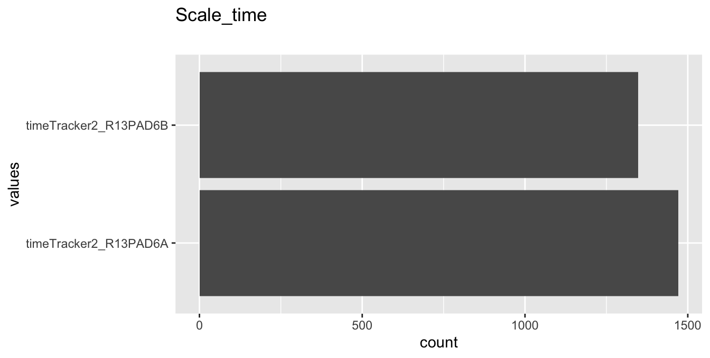

Chapter 11 Codebook
This chapter displays the codebook for the Good Loser data set, generated using the R package “codebook”.
if(!require("codebook")){install.packages("codebook"); library(codebook)}
if(!require("haven")){install.packages("haven"); library(haven)}
if(!require("knitr")){install.packages("knitr"); library(knitr)}
if(!require("openxlsx")){install.packages("openxlsx"); library(openxlsx)}
if(!require("tidyverse")){install.packages("tidyverse"); library(tidyverse)}
if(!require("dplyr")){install.packages("dplyr"); library(dplyr)}
knitr::opts_chunk$set(echo = FALSE, knitr.kable.NA = "", cache = FALSE, warning = FALSE, message = FALSE, error = TRUE, echo = FALSE)## # A tibble: 2,819 x 19
## responseid r13pad1 r13pad2 r13pad3 r13pad4 r13pad5_avsender r13pad5_sak
## <dbl> <dbl+l> <dbl+l> <dbl+l> <dbl+l> <dbl+lbl> <dbl+lbl>
## 1 1000010 1 [I a… 3 [Fai… 2 [I a… 4 [Not… 5 [The local ne… 2 [in the …
## 2 1000018 1 [I a… 4 [Not… 1 [I a… 4 [Not… 5 [The local ne… 1 [in the …
## 3 1000023 2 [I a… 4 [Not… 1 [I a… 4 [Not… 7 [The local ne… 1 [in the …
## 4 1000038 1 [I a… 3 [Fai… 2 [I a… 2 [Imp… 1 [[BLANK]] 1 [in the …
## 5 1000043 1 [I a… 3 [Fai… 1 [I a… 3 [Fai… 1 [[BLANK]] 1 [in the …
## 6 1000045 2 [I a… 1 [Ver… 2 [I a… 4 [Not… 4 [The leader o… 1 [in the …
## 7 1000049 1 [I a… 1 [Ver… 2 [I a… 1 [Ver… 2 [The leader o… 1 [in the …
## 8 1000051 1 [I a… 5 [Not… 1 [I a… 4 [Not… 3 [The leader o… 1 [in the …
## 9 1000058 2 [I a… 3 [Fai… 1 [I a… 4 [Not… 2 [The leader o… 1 [in the …
## 10 1000062 2 [I a… 5 [Not… 1 [I a… 4 [Not… 5 [The local ne… 1 [in the …
## # … with 2,809 more rows, and 12 more variables: r13pad5_utfall <dbl+lbl>,
## # r13pad5_vinner <dbl+lbl>, r13pad5_vinnermargin <dbl+lbl>,
## # r13pad6_ran <dbl+lbl>, r13pad6a <dbl+lbl>, r13pad6b <dbl+lbl>,
## # r13pad7a <dbl+lbl>, r13pad7b <dbl+lbl>, r13pad8a <dbl+lbl>,
## # r13pad8b <dbl+lbl>, Scale_time <chr>, time <dbl>11.0.1 Metadata
11.0.1.1 Description
Dataset name: d
The dataset has N=2819 rows and 19 columns. 2819 rows have no missing values on any column.
Metadata for search engines
Date published: 2020-01-15
- keywords: responseid, r13pad1, r13pad2, r13pad3, r13pad4, r13pad5_avsender, r13pad5_sak, r13pad5_utfall, r13pad5_vinner, r13pad5_vinnermargin, r13pad6_ran, r13pad6a, r13pad6b, r13pad7a, r13pad7b, r13pad8a, r13pad8b, Scale_time and time
11.1 Variables
11.1.1 responseid
responseid
11.1.1.1 Distribution
0 missing values.
11.1.1.2 Summary statistics
| name | label | data_type | n_missing | complete_rate | min | median | max | mean | sd | hist | format.spss |
|---|---|---|---|---|---|---|---|---|---|---|---|
| responseid | responseid | numeric | 0 | 1 | 1e+06 | 1e+06 | 1e+06 | 1009421 | 5433.169 | ▇▃▆▇▇ | F8.0 |
11.1.2 r13pad1
For/against: Ban on begging in your municipality.
11.1.2.1 Distribution

0 missing values.
11.1.2.2 Summary statistics
| name | label | data_type | value_labels | n_missing | complete_rate | min | median | max | mean | sd | n_value_labels | hist | format.spss |
|---|---|---|---|---|---|---|---|---|---|---|---|---|---|
| r13pad1 | For/against: Ban on begging in your municipality. | haven_labelled |
|
0 | 1 | 1 | 1 | 97 | 2.613338 | 10.74794 | 4 | ▇▁▁▁▁▁▁▁ | F8.2 |
11.1.2.3 Value labels
- I am in favour of a ban on begging in the municipality: 1
- I am against a ban on begging in the municipality: 2
- Not answered: 97
- Not asked: 98
11.1.3 r13pad2
How important is the issue of begging bans to you?
11.1.3.1 Distribution

0 missing values.
11.1.3.2 Summary statistics
| name | label | data_type | value_labels | n_missing | complete_rate | min | median | max | mean | sd | n_value_labels | hist | format.spss |
|---|---|---|---|---|---|---|---|---|---|---|---|---|---|
| r13pad2 | How important is the issue of begging bans to you? | haven_labelled |
|
0 | 1 | 1 | 3 | 97 | 3.547003 | 5.938188 | 7 | ▇▁▁▁▁▁▁▁ | F8.2 |
11.1.3.3 Value labels
- Very important: 1
- Important: 2
- Fairly important: 3
- Not very important: 4
- Not at all important: 5
- Not answered: 97
- Not asked: 98
11.1.4 r13pad3
For/against: Increase in tolls for diesel cars in your municipality.
11.1.4.1 Distribution

0 missing values.
11.1.4.2 Summary statistics
| name | label | data_type | value_labels | n_missing | complete_rate | min | median | max | mean | sd | n_value_labels | hist | format.spss |
|---|---|---|---|---|---|---|---|---|---|---|---|---|---|
| r13pad3 | For/against: Increase in tolls for diesel cars in your municipality. | haven_labelled |
|
0 | 1 | 1 | 2 | 97 | 2.999645 | 10.85103 | 4 | ▇▁▁▁▁▁▁▁ | F8.2 |
11.1.4.3 Value labels
- I am in favour of an increase in the tolls for diesel cars: 1
- I am against an increase in the tolls for diesel cars: 2
- Not answered: 97
- Not asked: 98
11.1.5 r13pad4
How important is the issue of increased tolls for diesel cars to you?
11.1.5.1 Distribution

0 missing values.
11.1.5.2 Summary statistics
| name | label | data_type | value_labels | n_missing | complete_rate | min | median | max | mean | sd | n_value_labels | hist | format.spss |
|---|---|---|---|---|---|---|---|---|---|---|---|---|---|
| r13pad4 | How important is the issue of increased tolls for diesel cars to you? | haven_labelled |
|
0 | 1 | 1 | 3 | 97 | 3.239092 | 6.959501 | 7 | ▇▁▁▁▁▁▁▁ | F8.2 |
11.1.5.3 Value labels
- Very important: 1
- Important: 2
- Fairly important: 3
- Not very important: 4
- Not at all important: 5
- Not answered: 97
- Not asked: 98
11.1.6 r13pad5_avsender
[Background variable for conjoint experiment. Randomly selects statement made by losing side in a hypothetical situation. Randomizes if r13group = 2 or 4]
11.1.6.1 Distribution

0 missing values.
11.1.6.2 Summary statistics
| name | label | data_type | value_labels | n_missing | complete_rate | min | median | max | mean | sd | n_value_labels | hist | format.spss |
|---|---|---|---|---|---|---|---|---|---|---|---|---|---|
| r13pad5_avsender |
[Background variable for conjoint experiment. Randomly selects statement made by losing side in a hypothetical situation. Randomizes if r13group = 2 or 4]
|
haven_labelled |
|
0 | 1 | 1 | 4 | 7 | 4.02022 | 1.983059 | 7 | ▇▇▇▇▁▇▇▇ | F8.2 |
11.1.6.3 Value labels
- [BLANK]: 1
- The leader of one of the parties that was against the decision says that they are disappointed and that the decision was: 2
- The leader of one of the parties that was against the decision says that they are disappointed and that the decision was: 3
- The leader of one of the parties that was against the decision says that they are disappointed and that the decision was: 4
- The local newspaper – which was against the decision – writes in an editorial that they are disappointed and that th: 5
- The local newspaper – which was against the decision – writes in an editorial that they are disappointed and that th: 6
- The local newspaper – which was against the decision – writes in an editorial that they are disappointed and that th: 7
11.1.7 r13pad5_sak
[Background variable for conjoint experiment. Randomly selects issue of a hypothetical situation. Randomizes if r13group = 2 or 4]
11.1.7.1 Distribution
0 missing values.
11.1.7.2 Summary statistics
| name | label | data_type | value_labels | n_missing | complete_rate | min | median | max | mean | sd | n_value_labels | hist | format.spss |
|---|---|---|---|---|---|---|---|---|---|---|---|---|---|
| r13pad5_sak |
[Background variable for conjoint experiment. Randomly selects issue of a hypothetical situation. Randomizes if r13group = 2 or 4]
|
haven_labelled |
|
0 | 1 | 1 | 1 | 2 | 1.49734 | 0.5000816 | 2 | ▇▁▁▁▁▁▁▇ | F8.2 |
11.1.7.3 Value labels
- in the future, begging on the streets will be banned or permitted in the municipality. This is a controversial decision.: 1
- in the future, diesel cars will pay increased tolls. This is a controversial decision. Some residents are strongly in fa: 2
11.1.8 r13pad5_utfall
[Background variable for conjoint experiment. Randomly selects the outcome of the issue of a hypothetical situation. Randomizes if r13group = 2 or 4]
11.1.8.1 Distribution

0 missing values.
11.1.8.2 Summary statistics
| name | label | data_type | value_labels | n_missing | complete_rate | min | median | max | mean | sd | n_value_labels | hist | format.spss |
|---|---|---|---|---|---|---|---|---|---|---|---|---|---|
| r13pad5_utfall |
[Background variable for conjoint experiment. Randomly selects the outcome of the issue of a hypothetical situation. Randomizes if r13group = 2 or 4]
|
haven_labelled |
|
0 | 1 | 1 | 2 | 2 | 1.500177 | 0.5000887 | 2 | ▇▁▁▁▁▁▁▇ | F8.2 |
11.1.8.3 Value labels
- The Yes side won the vote: 1
- The No side won the vote: 2
11.1.9 r13pad5_vinner
[Background variable for conjoint experiment. Randomly selects the reaction of the winner in a hypothetical situation. Randomizes if r13group = 2 or 4]
11.1.9.1 Distribution
0 missing values.
11.1.9.2 Summary statistics
| name | label | data_type | value_labels | n_missing | complete_rate | min | median | max | mean | sd | n_value_labels | hist | format.spss |
|---|---|---|---|---|---|---|---|---|---|---|---|---|---|
| r13pad5_vinner |
[Background variable for conjoint experiment. Randomly selects the reaction of the winner in a hypothetical situation. Randomizes if r13group = 2 or 4]
|
haven_labelled |
|
0 | 1 | 1 | 2 | 2 | 1.510819 | 0.4999716 | 2 | ▇▁▁▁▁▁▁▇ | F8.2 |
11.1.9.3 Value labels
- [BLANK]: 1
- Following the decision, a politician on the winning side says that it was a good decision and that common sense prevaile: 2
11.1.10 r13pad5_vinnermargin
[Background variable for conjoint experiment. Randomly selects the winning margin in a hypothetical situation. Randomizes if r13group = 2 or 4]
11.1.10.1 Distribution
0 missing values.
11.1.10.2 Summary statistics
| name | label | data_type | value_labels | n_missing | complete_rate | min | median | max | mean | sd | n_value_labels | hist | format.spss |
|---|---|---|---|---|---|---|---|---|---|---|---|---|---|
| r13pad5_vinnermargin |
[Background variable for conjoint experiment. Randomly selects the winning margin in a hypothetical situation. Randomizes if r13group = 2 or 4]
|
haven_labelled |
|
0 | 1 | 1 | 2 | 3 | 1.991132 | 0.8217195 | 3 | ▇▁▁▇▁▁▁▇ | F8.2 |
11.1.10.3 Value labels
- .: 1
- with a slight majority.: 2
- With a large majority.: 3
11.1.11 r13pad6_ran
[Randomly chooses r13pad6a, r13pad7a, and r13pad8a, or r13pad6b, r13pad7b, and r13pad8b. . Randomizes if r13group = 2 or 4]
11.1.11.1 Distribution

0 missing values.
11.1.11.2 Summary statistics
| name | label | data_type | value_labels | n_missing | complete_rate | min | median | max | mean | sd | n_value_labels | hist | format.spss |
|---|---|---|---|---|---|---|---|---|---|---|---|---|---|
| r13pad6_ran |
[Randomly chooses r13pad6a, r13pad7a, and r13pad8a, or r13pad6b, r13pad7b, and r13pad8b. . Randomizes if r13group = 2 or 4]
|
haven_labelled |
|
0 | 1 | 1 | 1 | 2 | 1.478184 | 0.4996124 | 2 | ▇▁▁▁▁▁▁▇ | F8.2 |
11.1.11.3 Value labels
- Respondent gets R13PAD6A, R13PAD7A, and R13PAD8A: 1
- Respondent gets R13PAD6B, R13PAD7B, and R13PAD8B: 2
11.1.12 r13pad6a
Text options: How fair was the way the decision was made.
11.1.12.1 Distribution
0 missing values.
11.1.12.2 Summary statistics
| name | label | data_type | value_labels | n_missing | complete_rate | min | median | max | mean | sd | n_value_labels | hist | format.spss |
|---|---|---|---|---|---|---|---|---|---|---|---|---|---|
| r13pad6a | Text options: How fair was the way the decision was made. | haven_labelled |
|
0 | 1 | 1 | 5 | 98 | 48.70592 | 47.89543 | 7 | ▇▁▁▁▁▁▁▇ | F8.2 |
11.1.12.3 Value labels
- Very fair: 1
- Fair: 2
- Quite fair: 3
- Not very fair: 4
- Not at all fair: 5
- Not answered: 97
- Not asked: 98
11.1.13 r13pad6b
Scale options: How fair was the way the decision was made.
11.1.13.1 Distribution
0 missing values.
11.1.13.2 Summary statistics
| name | label | data_type | value_labels | n_missing | complete_rate | min | median | max | mean | sd | n_value_labels | hist | format.spss |
|---|---|---|---|---|---|---|---|---|---|---|---|---|---|
| r13pad6b | Scale options: How fair was the way the decision was made. | haven_labelled |
|
0 | 1 | 1 | 98 | 98 | 52.43952 | 47.97391 | 7 | ▇▁▁▁▁▁▁▇ | F8.2 |
11.1.13.3 Value labels
- 1 Most fair: 1
- 2: 2
- 3: 3
- 4: 4
- 5 Not fair: 5
- Not answered: 97
- Not asked: 98
11.1.14 r13pad7a
Text options: How reasonable was the decision.
11.1.14.1 Distribution

0 missing values.
11.1.14.2 Summary statistics
| name | label | data_type | value_labels | n_missing | complete_rate | min | median | max | mean | sd | n_value_labels | hist | format.spss |
|---|---|---|---|---|---|---|---|---|---|---|---|---|---|
| r13pad7a | Text options: How reasonable was the decision. | haven_labelled |
|
0 | 1 | 1 | 5 | 98 | 49.04753 | 47.73103 | 7 | ▇▁▁▁▁▁▁▇ | F8.2 |
11.1.14.3 Value labels
- Very reasonable: 1
- Reasonable: 2
- Somewhat reasonable: 3
- Not very reasonable: 4
- Not reasonable at all: 5
- Not answered: 97
- Not asked: 98
11.1.15 r13pad7b
Scale options: How reasonable was the decision.
11.1.15.1 Distribution
0 missing values.
11.1.15.2 Summary statistics
| name | label | data_type | value_labels | n_missing | complete_rate | min | median | max | mean | sd | n_value_labels | hist | format.spss |
|---|---|---|---|---|---|---|---|---|---|---|---|---|---|
| r13pad7b | Scale options: How reasonable was the decision. | haven_labelled |
|
0 | 1 | 1 | 98 | 98 | 52.95211 | 47.76749 | 7 | ▇▁▁▁▁▁▁▇ | F8.2 |
11.1.15.3 Value labels
- 1 Most reasonable: 1
- 2: 2
- 3: 3
- 4: 4
- 5 Not reasonable: 5
- Not answered: 97
- Not asked: 98
11.1.16 r13pad8a
Text options: How willing to accept the decision.
11.1.16.1 Distribution

0 missing values.
11.1.16.2 Summary statistics
| name | label | data_type | value_labels | n_missing | complete_rate | min | median | max | mean | sd | n_value_labels | hist | format.spss |
|---|---|---|---|---|---|---|---|---|---|---|---|---|---|
| r13pad8a | Text options: How willing to accept the decision. | haven_labelled |
|
0 | 1 | 1 | 5 | 98 | 48.70557 | 47.86341 | 7 | ▇▁▁▁▁▁▁▇ | F8.2 |
11.1.16.3 Value labels
- Very willing: 1
- Willing: 2
- Fairly willing: 3
- Not very willing: 4
- Not at all willing: 5
- Not answered: 97
- Not asked: 98
11.1.17 r13pad8b
Scale options: How willing to accept the decision.
11.1.17.1 Distribution

0 missing values.
11.1.17.2 Summary statistics
| name | label | data_type | value_labels | n_missing | complete_rate | min | median | max | mean | sd | n_value_labels | hist | format.spss |
|---|---|---|---|---|---|---|---|---|---|---|---|---|---|
| r13pad8b | Scale options: How willing to accept the decision. | haven_labelled |
|
0 | 1 | 1 | 98 | 98 | 52.60518 | 47.9336 | 7 | ▇▁▁▁▁▁▁▇ | F8.2 |
11.1.17.3 Value labels
- 1 Most willing: 1
- 2: 2
- 3: 3
- 4: 4
- 5 Not willing: 5
- Not answered: 97
- Not asked: 98
11.1.18 Scale_time
11.1.18.1 Distribution

0 missing values.
11.1.18.2 Summary statistics
| name | data_type | n_missing | complete_rate | n_unique | empty | min | max | whitespace | format.spss | label |
|---|---|---|---|---|---|---|---|---|---|---|
| Scale_time | character | 0 | 1 | 2 | 0 | 21 | 21 | 0 | A21 | NA |
11.1.19 time
11.1.19.1 Distribution

0 missing values.
11.1.19.2 Summary statistics
| name | data_type | n_missing | complete_rate | min | median | max | mean | sd | hist | format.spss | label |
|---|---|---|---|---|---|---|---|---|---|---|---|
| time | numeric | 0 | 1 | 0 | 88 | 1e+06 | 3259.379 | 47300.62 | ▇▁▁▁▁ | F8.2 | NA |
11.2 Missingness report
11.3 Codebook table
JSON-LD metadata
The following JSON-LD can be found by search engines, if you share this codebook
publicly on the web.
{
"name": "d",
"datePublished": "2020-01-15",
"description": "The dataset has N=2819 rows and 19 columns.\n2819 rows have no missing values on any column.\n\n\n## Table of variables\nThis table contains variable names, labels, and number of missing values.\nSee the complete codebook for more.\n\n[truncated]\n\n### Note\nThis dataset was automatically described using the [codebook R package](https://rubenarslan.github.io/codebook/) (version 0.8.2).",
"keywords": ["responseid", "r13pad1", "r13pad2", "r13pad3", "r13pad4", "r13pad5_avsender", "r13pad5_sak", "r13pad5_utfall", "r13pad5_vinner", "r13pad5_vinnermargin", "r13pad6_ran", "r13pad6a", "r13pad6b", "r13pad7a", "r13pad7b", "r13pad8a", "r13pad8b", "Scale_time", "time"],
"@context": "http://schema.org/",
"@type": "Dataset",
"variableMeasured": [
{
"name": "responseid",
"description": "responseid",
"@type": "propertyValue"
},
{
"name": "r13pad1",
"description": "For/against: Ban on begging in your municipality.",
"value": "1. I am in favour of a ban on begging in the municipality,\n2. I am against a ban on begging in the municipality,\n97. Not answered,\n98. Not asked",
"maxValue": 98,
"minValue": 1,
"@type": "propertyValue"
},
{
"name": "r13pad2",
"description": "How important is the issue of begging bans to you?",
"value": "1. Very important,\n2. Important,\n3. Fairly important,\n4. Not very important,\n5. Not at all important,\n97. Not answered,\n98. Not asked",
"maxValue": 98,
"minValue": 1,
"@type": "propertyValue"
},
{
"name": "r13pad3",
"description": "For/against: Increase in tolls for diesel cars in your municipality.",
"value": "1. I am in favour of an increase in the tolls for diesel cars,\n2. I am against an increase in the tolls for diesel cars,\n97. Not answered,\n98. Not asked",
"maxValue": 98,
"minValue": 1,
"@type": "propertyValue"
},
{
"name": "r13pad4",
"description": "How important is the issue of increased tolls for diesel cars to you?",
"value": "1. Very important,\n2. Important,\n3. Fairly important,\n4. Not very important,\n5. Not at all important,\n97. Not answered,\n98. Not asked",
"maxValue": 98,
"minValue": 1,
"@type": "propertyValue"
},
{
"name": "r13pad5_avsender",
"description": "[Background variable for conjoint experiment. Randomly selects statement made by losing side in a hypothetical situation. Randomizes if r13group = 2 or 4]\r\n",
"value": "1. [BLANK],\n2. The leader of one of the parties that was against the decision says that they are disappointed and that the decision was,\n3. The leader of one of the parties that was against the decision says that they are disappointed and that the decision was,\n4. The leader of one of the parties that was against the decision says that they are disappointed and that the decision was,\n5. The local newspaper – which was against the decision – writes in an editorial that they are disappointed and that th,\n6. The local newspaper – which was against the decision – writes in an editorial that they are disappointed and that th,\n7. The local newspaper – which was against the decision – writes in an editorial that they are disappointed and that th",
"maxValue": 7,
"minValue": 1,
"@type": "propertyValue"
},
{
"name": "r13pad5_sak",
"description": "[Background variable for conjoint experiment. Randomly selects issue of a hypothetical situation. Randomizes if r13group = 2 or 4]\r\n",
"value": "1. in the future, begging on the streets will be banned or permitted in the municipality. This is a controversial decision.,\n2. in the future, diesel cars will pay increased tolls. This is a controversial decision. Some residents are strongly in fa",
"maxValue": 2,
"minValue": 1,
"@type": "propertyValue"
},
{
"name": "r13pad5_utfall",
"description": "[Background variable for conjoint experiment. Randomly selects the outcome of the issue of a hypothetical situation. Randomizes if r13group = 2 or 4]\r\n",
"value": "1. The Yes side won the vote,\n2. The No side won the vote",
"maxValue": 2,
"minValue": 1,
"@type": "propertyValue"
},
{
"name": "r13pad5_vinner",
"description": "[Background variable for conjoint experiment. Randomly selects the reaction of the winner in a hypothetical situation. Randomizes if r13group = 2 or 4]\r\n",
"value": "1. [BLANK],\n2. Following the decision, a politician on the winning side says that it was a good decision and that common sense prevaile",
"maxValue": 2,
"minValue": 1,
"@type": "propertyValue"
},
{
"name": "r13pad5_vinnermargin",
"description": "[Background variable for conjoint experiment. Randomly selects the winning margin in a hypothetical situation. Randomizes if r13group = 2 or 4]\r\n",
"value": "1. .,\n2. with a slight majority.,\n3. With a large majority.",
"maxValue": 3,
"minValue": 1,
"@type": "propertyValue"
},
{
"name": "r13pad6_ran",
"description": "[Randomly chooses r13pad6a, r13pad7a, and r13pad8a, or r13pad6b, r13pad7b, and r13pad8b. . Randomizes if r13group = 2 or 4]\r\n",
"value": "1. Respondent gets R13PAD6A, R13PAD7A, and R13PAD8A,\n2. Respondent gets R13PAD6B, R13PAD7B, and R13PAD8B",
"maxValue": 2,
"minValue": 1,
"@type": "propertyValue"
},
{
"name": "r13pad6a",
"description": "Text options: How fair was the way the decision was made.",
"value": "1. Very fair,\n2. Fair,\n3. Quite fair,\n4. Not very fair,\n5. Not at all fair,\n97. Not answered,\n98. Not asked",
"maxValue": 98,
"minValue": 1,
"@type": "propertyValue"
},
{
"name": "r13pad6b",
"description": "Scale options: How fair was the way the decision was made.",
"value": "1. 1 Most fair,\n2. 2,\n3. 3,\n4. 4,\n5. 5 Not fair,\n97. Not answered,\n98. Not asked",
"maxValue": 98,
"minValue": 1,
"@type": "propertyValue"
},
{
"name": "r13pad7a",
"description": "Text options: How reasonable was the decision.",
"value": "1. Very reasonable,\n2. Reasonable,\n3. Somewhat reasonable,\n4. Not very reasonable,\n5. Not reasonable at all,\n97. Not answered,\n98. Not asked",
"maxValue": 98,
"minValue": 1,
"@type": "propertyValue"
},
{
"name": "r13pad7b",
"description": "Scale options: How reasonable was the decision.",
"value": "1. 1 Most reasonable,\n2. 2,\n3. 3,\n4. 4,\n5. 5 Not reasonable,\n97. Not answered,\n98. Not asked",
"maxValue": 98,
"minValue": 1,
"@type": "propertyValue"
},
{
"name": "r13pad8a",
"description": "Text options: How willing to accept the decision.",
"value": "1. Very willing,\n2. Willing,\n3. Fairly willing,\n4. Not very willing,\n5. Not at all willing,\n97. Not answered,\n98. Not asked",
"maxValue": 98,
"minValue": 1,
"@type": "propertyValue"
},
{
"name": "r13pad8b",
"description": "Scale options: How willing to accept the decision.",
"value": "1. 1 Most willing,\n2. 2,\n3. 3,\n4. 4,\n5. 5 Not willing,\n97. Not answered,\n98. Not asked",
"maxValue": 98,
"minValue": 1,
"@type": "propertyValue"
},
{
"name": "Scale_time",
"@type": "propertyValue"
},
{
"name": "time",
"@type": "propertyValue"
}
]
}`